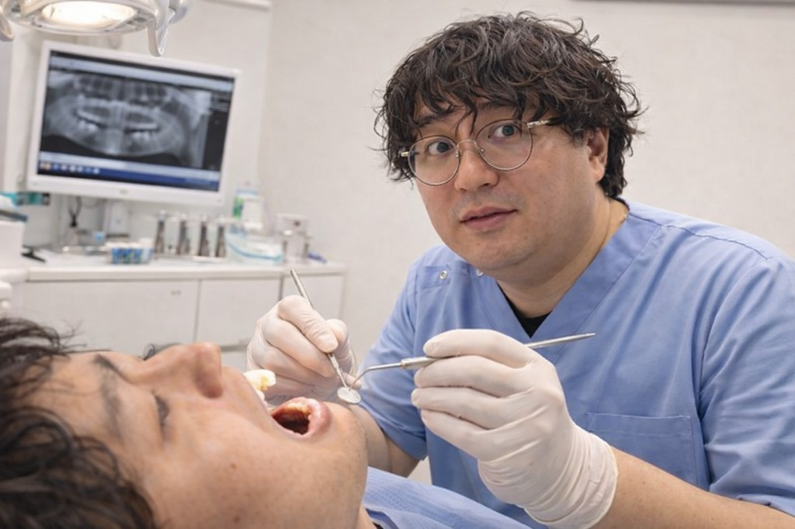

診療時間
- 月・火・水・金 9:00-13:00 / 15:00-19:00
- 土 9:00-13:00 / 15:00-17:00
休診日
- 木・日・祝
- 急患はお電話でご相談ください
アクセス
- 南武線 府中本町 徒歩3分
- 京王線 府中 徒歩10分 / 京王線 分倍河原 徒歩10分
お知らせ
- 診療枠の変更
- 予防歯科のご案内
- 年末年始の診療案内
初診・受診ガイド
緊急対応、初診説明、治療後の予防管理まで、来院前に把握しやすいように整理しています。
01 URGENT CARE
急な痛み・腫れの応急対応
強い痛み、腫れ、詰め物脱離などは当日枠を確認し、緊急度に応じて優先案内します。
- お電話で症状を確認
- 必要時は応急処置を実施
- 高度処置は連携先をご紹介

02 FIRST VISIT
初診の総合診査と説明
初診では問診と検査を行い、原因・治療選択肢・通院目安を確認してから治療へ進みます。
- 持ち物と来院時刻を事前案内
- 検査結果を画面で共有
- 同意後に治療を開始
03 PREVENTIVE CARE
治療後の再発予防と管理
治療して終わりではなく、定期検診とセルフケア支援で再発しにくい状態を維持します。
- 3〜6か月ごとの定期チェック
- クリーニングとブラッシング指導
- 症状変化時の早期相談窓口
初診の流れ（目安45〜60分）
予約の直後から来院後フォローまで、受付が順にご案内します。
- 1予約
症状・希望日時を送信（WEB・LINE・電話）
- 2事前確認
受付番号発行、持ち物と来院時間を案内
- 3問診・検査
症状確認、必要に応じて撮影や検査を実施
- 4説明と同意
治療方法・費用目安・通院回数を共有
- 5治療 / 次回予約
応急処置または本治療へ進行し、来院後フォローまで案内
予約後フォロー
- 送信後に自動返信で受付完了を通知
- 診療時間内にスタッフが内容確認して折り返し
- 前日にリマインド連絡（LINE・電話）で来院漏れを防止
24時間受付
LINEでかんたん予約
24時間受付。友だち追加後、チャットでご希望日時を送るだけで予約できます。
LINE ID: @kuwara-dental
※LINEは24時間受付です。返信は診療時間内に順次ご案内します。
- 1「LINE予約」ボタンから友だち追加
- 2お名前・症状・希望日時を送信
- 3スタッフ返信で予約確定
診療内容
よくあるお悩みを分かりやすく。必要な治療だけ、納得したうえで進められるように。
- 一般歯科
- 予防歯科
- 小児歯科
- 審美歯科
- 入れ歯相談
- 口腔ケア

当院について
「何をするか」が分かる診療と、治療後まで見据えた予防管理を重視しています。
院長：くわら 太郎
- 検査結果を共有し、治療方針を相談して決定
- 必要に応じて複数の治療選択肢を提示
- 定期検診とクリーニングで再発予防を継続
※症例・費用・治療期間などの表示は、医療広告ガイドラインに沿って掲載しています。
初診の方へ: 来院前後のフォロー
不安を減らすため、予約前の相談から来院後の次回案内まで段階ごとにフォローします。
- 予約時に「症状・希望日時・不安点」を確認
- 必要な持ち物と来院時間の目安を事前案内
- 当日は問診・検査のあとに治療方針を説明
- 同意後に応急処置または治療開始
- 会計時に次回の通院目安とセルフケアを案内
予約前相談
「どこが痛むか」「いつからか」などを事前整理できるよう、LINE・電話で相談できます。
予約後フォロー
受付番号を発行し、診療時間内に確認連絡。急性症状は優先して案内します。
来院当日サポート
検査結果を画面で共有し、治療方法と通院回数の目安を分かりやすく説明します。
来院後フォロー
治療後の注意点、再診の目安、気になる症状が出た場合の連絡方法を案内します。
スタッフ紹介
明るく丁寧な対応を心がけています。ご不安なことがあれば気軽にご相談ください。
アクセス・診療時間
所在地
住所 〒183-0027 東京都府中市本町2丁目5-3
最寄 南武線 府中本町 徒歩3分 / 京王線 府中 徒歩10分 / 京王線 分倍河原 徒歩10分
電話 042-366-6605
※地図が表示されない場合は、上のリンクからご確認ください。
診療時間
診療時間 月・火・水・金 9:00-13:00 / 15:00-19:00、土 9:00-13:00 / 15:00-17:00
休診日 木・日・祝
※土曜・祝日の診療は医院方針に合わせて記載してください。
予約・お問い合わせは、このページ下部のフォームまたは固定ボタンから受け付けています。
よくある質問
急に痛くなった。今日みてもらえる？
まずはお電話で症状を教えてください。当日対応の可否を確認し、緊急度に応じてご案内します。
初診は何分前に行けばいい？
問診票記入と資格確認のため、初診は予約時間の10分前を目安にご来院ください。
初診時の持ち物は？
保険証またはマイナ保険証、（お持ちの方は）お薬手帳・紹介状をご持参ください。
予約変更・キャンセルはできますか？
可能です。分かり次第できるだけ早くご連絡ください。無断キャンセルはご遠慮ください。
痛みが苦手で治療が不安です。
最初に不安を共有してください。治療ペースや痛みへの配慮を相談しながら進めます。
妊娠中・授乳中でも受診できますか？
可能です。体調や週数に配慮して対応するため、予約時に必ずお知らせください。
保険診療と自費診療の違いは？
保険は制度内の治療、自費は材料や方法の選択肢が広い治療です。説明後に選択できます。
子ども連れ・ベビーカーでも通えますか？
可能です。必要な配慮がある場合は予約時にご相談ください。
予約・お問い合わせ
LINEは24時間受付です。受診前のご相談にも対応しています。
予約後フォロー
送信待ち
- 送信後の自動返信に不備がある場合は、LINEで受付番号を添えてご連絡ください。
- 強い痛み・腫れなどの急性症状は電話を優先してください。